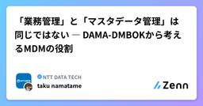
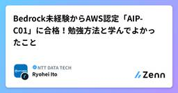
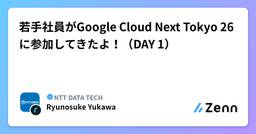
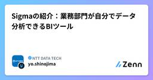
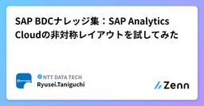

NTT DATA TECHのフィード
https://zenn.dev/p/nttdata_tech
NTT DATA公式アカウントです。 技術を愛するNTT DATAの技術者が、気軽に楽しく発信していきます。 当社のサービスなどについてのお問い合わせは、 お問い合わせフォーム https://nttdata.com/jp/ja/contact-us/ へお願いします。
フィード

「業務管理」と「マスタデータ管理」は同じではない ― DAMA-DMBOKから考えるMDMの役割
NTT DATA TECHのフィード
はじめに企業の業務改革やシステム刷新についてお客様と会話していると、次のようなテーマで MDM（Master Data Management：マスタデータ管理） の導入が検討されるケースが多いように感じます。取引先管理業務の改革顧客管理業務の改革社員管理業務の改革製品管理業務の改革商品管理業務の改革原材料管理業務の改革いずれも「取引先」「顧客」「社員」「製品」「商品」「原材料」といった、企業にとって重要なデータを扱う業務です。そのため、顧客管理を高度化したいので、顧客MDMを導入するあるいは、商品管理業務を統合したいので、商品MDMを構築するとい...
1日前

Bedrock未経験からAWS認定「AIP-C01」に合格！勉強方法と学んでよかったこと
NTT DATA TECHのフィード
1. はじめに2026年9月に、AWS Certified Generative AI Developer - Professional（AIP-C01、以下AIP）を受験し、817点で合格しました！学習を始める前は、AWS Certified Solutions Architect - Professional（以下SAP）を取得していたものの、Amazon Bedrockを使った経験はありませんでした。この記事では、受験前の前提知識、実際に使った教材と勉強方法、そして学習を通して得られたことを紹介します。 2. 前提知識筆者の前提知識は、以下のとおりです。AWS認...
1日前

若手社員がGoogle Cloud Next Tokyo 26に参加してきたよ！（DAY 1）
NTT DATA TECHのフィード
NTTデータ2年目社員の湯川と、1年目社員の喜田(@kidatakeru)と齋藤(@maaya)です。クラウドインフラ領域に携わる若手エンジニア3名で、2026年7月30日・31日に東京ビッグサイトで開催された Google Cloud Next Tokyo 2026に参加しました。本記事では、参加したセッションや展示から、クラウドインフラやSREの業務とのつながりを感じた内容を紹介します。DAY 2のレポートでは、AIエージェントを支えるインフラ、実行基盤、データ、セキュリティについて紹介しています。https://zenn.dev/nttdata_tech/articles...
2日前

若手社員がGoogle Cloud Next Tokyo 26に参加してきたよ！（DAY 2）
NTT DATA TECHのフィード
NTTデータ3年目社員の栫と、1年目社員の喜田（@kidatakeru）、齋藤（@maaya）です。2026年7月30日・31日に東京ビッグサイトで開催されたGoogle Cloud Next Tokyo 26のDAY 2レポートです。DAY 2で特に印象に残ったのは、運用に関する話題の多さです。基調講演ではAIエージェントを動かし続けるための基盤が紹介され、各セッションでもデータベース移行に伴うチューニング、ハイブリッドクラウド運用、障害対応、オブザーバビリティなど、システムを継続的に運用するための工夫が語られていました。新機能そのものよりも、「作った後にどう運用するか」に焦点...
2日前

World Robot Conference 2026 現地レポート
NTT DATA TECHのフィード
World Robot Conference 2026 現地レポート本レポートでは、WRC2026で見えた技術トレンドと、中国ロボット産業の動向、そしてNTT DATAにとっての示唆について紹介したい。 中国が牽引する「Physical AI」の現在地と、その先に見えるロボット社会2026年8月19日から23日にかけて、中国・北京市で開催された「World Robot Conference 2026（WRC2026）」に参加した。300社超、2,000点超の展示が集まる本イベントは、世界最大級のロボット展示会として、現在のロボティクス業界の方向性を知るうえで非常に重要な場と...
2日前

Sigmaの紹介：業務部門が自分でデータ分析できるBIツール
NTT DATA TECHのフィード
Sigmaの紹介: 業務部門が自分でデータ分析できるBIツール 目次はじめにSigmaの機能まとめ特徴1 Excelに近い操作感でデータ分析できる特徴2 ドラッグアンドドロップでも可視化できる特徴3 Workbook上で分析からダッシュボード作成まで進められる特徴4 ダッシュボードだけでなくWebアプリのような画面も作成できる特徴5 Input TableとWritebackでSnowflakeへ書き戻せる導入検討時に見るべきポイント観点1 業務部門が自分で分析したい領域はどこか観点2 SnowflakeなどのクラウドDWHとの役割分担観点3 書き戻し...
2日前

SAP BDCナレッジ集：SAP Analytics Cloudの非対称レイアウトを試してみた
NTT DATA TECHのフィード
SAP Analytics Cloudの非対称レイアウトを試してみた はじめにSAP Analytics Cloud（SAC）では、2026 Q2のアップデートでテーブルの非対称レイアウト（Asymmetric Reporting） が利用できるようになりました。Asymmetric Reporting Layout月次レポートでは、「4月までは実績、5月以降は予測」のように、実績と予測を1つの表で連続して見せたいケースがよくあります。従来のテーブルでは、ActualとForecastを並べても、その内側に配置した月ディメンションは共通です。そのため、実績が4月までしかな...
3日前

Kong API + AI Summit '26 参加レポート 〜AI Connectivity Platformへ広がるKongの世界〜
NTT DATA TECHのフィード
1. はじめにこんにちは。NTTデータでKong製品の導入・活用支援を担当している伊藤です。NTTデータは2024年よりKongのパートナーとして活動しています。この度、2026年9月30日〜10月1日にロサンゼルスで開催された「Kong API + AI Summit 2026」に参加してきました。本記事では、「KongがAIエージェント時代にどのようなプラットフォームを目指しているのか」 という全体像と、特に印象に残った発表をピックアップして紹介します。図1-1. Karlがお出迎え図1-2. 会場 2. KongとはKongは、API Gatewayを中心...
3日前

Kong KonnectのObservability機能でLLM利用料を可視化してみた
NTT DATA TECHのフィード
1. はじめにLLMをアプリケーションから利用する機会が増えるにつれて、APIの呼び出し回数だけではなく、どのアプリケーションがどれくらいLLMを利用しているのか、また利用料がどの程度発生しているのかを把握することが重要になってきています。特にチームでLLM APIを共通利用する場合や、複数のアプリケーションからLLMを呼び出す場合、利用状況を可視化することで、チーム別・アプリケーション別の利用傾向を把握しやすくなり、コスト管理にも役立ちます。今回は、Kong KonnectのAI Gateway機能を使ってOpenAI APIへのリクエストを中継し、その利用状況をKonnec...
6日前

Microsoft Agent Framework Workshop で、Multi-Agent Workflow に取り組んでみた
NTT DATA TECHのフィード
1. はじめに最近、AIエージェントの文脈で、A2A、マルチエージェントといったキーワードを見かける機会が増えてきました。ただ、これらの概念は記事を読むだけでは少し抽象的で、実際に動かしてみないとイメージしづらい部分があります。そこで今回は、マルチエージェントやエージェントワークフローの考え方を理解するために、 Microsoft Agent Framework を試してみました。題材として、Azure Samples で公開されている Agent Framework Workshop に取り組みました。https://github.com/Azure-Samples/ag...
6日前

Dataiku初心者が公式Learning Pathを一通り学んでみた ― 認定資格5つの学習ロードマップと到達点
NTT DATA TECHのフィード
1. はじめにはじめまして、NTTデータの菊地です。普段はデータ分析やデータ活用に関する業務に携わっています。Dataikuについては、業務をきっかけにほぼ初心者の状態から学習を始めました。Dataikuに興味を持ったものの、「そもそも何ができるの？」「何から学習すればいい？」「どこまで学べば、ある程度使えるようになる？」と迷う方も多いのではないでしょうか。私自身も同じ状態からスタートし、公式Learning Pathを中心に学習して、以下の認定資格を取得しました。・Core Designer・ML Practitioner・Advanced Designer...
9日前
【イベント出展レポート】Snowflake World Tourに出展しました
NTT DATA TECHのフィード
はじめに株式会社NTTデータの峰松です。私たちGleanチームは2026年9月10日と11日にグランドプリンスホテル新高輪で開催されたSnowflakeが主催するイベント「Snowflake World Tour Tokyo」に参加し、GleanとSnowflakeを連携したデモンストレーションを実施しました。https://www.snowflake.com/ja/world-tour/tokyo/本記事では、当日の様子とデモの概要についてご紹介します。 基本情報Snowflake World Tourは、Snowflakeの最新技術や活用事例を紹介するイベントです。...
10日前
ローカルでコーディングエージェント構築(Ollama + hermes Desktop)
NTT DATA TECHのフィード
この記事の対象者コーディングエージェントをローカルで構築したい方GPU環境(筆者はRTX 3060(VRAM 12GB))をお持ちの方Windows環境で実装したい方※本記事で紹介するツール・モデルの評価は執筆時点の検証結果に基づくものであり、利用にあたっては各組織のセキュリティポリシーおよび利用規約をご確認ください。 はじめに近年Codex、Claude Codeなど多様なコーディングエージェントアプリが出ており、コーディングエージェントを誰でも試すことができる時代になりました。一方で、投入してたコードや指示は学習用途で使われるケースもあり、セキュアな内容の取扱...
11日前
# 「何が問題なの？」と言われがちな監査指摘の背景を考える 〜監査でありがちな会話から見る認識ギャップ〜
NTT DATA TECHのフィード
はじめに本記事は、以下のような方を主な想定読者としています。個人情報・機密情報を扱うシステムの開発者システム運用担当者情報システム部門担当者情報セキュリティ統制に関する内部監査・自己点検対応を担当する方監査対応の場では、こんなやり取りが行われることがあります。「ちゃんとやってますよ」「今まで問題になったことはありません」「たまにしかやらないので大丈夫です」「この人しか分からないんです」現場からすると自然な反応です。しかし監査人は、その説明だけでは納得しないことがあります。なぜでしょうか。本記事では、監査対応でよく見られる“あるあるな会話”をもとに、...
11日前
Snowflakeのデータからダッシュボードを作る — 対話型BI「Squadbase」を実際に試してみた
NTT DATA TECHのフィード
1. はじめに株式会社NTTデータは2026年6月、株式会社Queueと対話型データ可視化AI領域で協業を開始しました。Queueが開発するSquadbaseと、NTTデータが持つデータ活用の知見やデータ基盤構築力を組み合わせ、企業のデータ活用を支援する取り組みです。Squadbaseは、既存のデータ基盤に接続し、AIとの対話を通じてダッシュボードや業務アプリケーションを作成できるプラットフォームです。今回の検証では、機能一覧だけでは分からない次の3点を確かめました。Snowflakeのような既存のデータ基盤へ接続した後、対話だけでどこまでダッシュボードを作り込めるのか同じ...
11日前
SAP BDCナレッジ集：Delta SharingでDatasphereとSAP Databricksをつなぐ
NTT DATA TECHのフィード
はじめに⏱️ 読了目安記事全体：約15分Hands-onのみ：約9分SAP Datasphereにすでにデータがあり、「このデータをSAP Databricksで分析したい」と思うケースはないでしょうか。また、CSVなどで管理している独自のFact / MasterデータをSAP Databricksで分析したいケースもあります。本記事では、以下の2つのシナリオを想定します。 シナリオ1：SAP S/4HANAのデータをDatabricksで分析したいSAP S/4HANA由来のData Productを、Delta Sharing経由でSAP Datab...
11日前
【AWS】Aurora MySQLのメトリクスを読み解く ― 第2回 パージ処理関連のメトリクス
NTT DATA TECHのフィード
1. はじめにAmazon Web Services（以下、AWS）が提供する代表的なリレーショナルデータベースサービスの一つにAmazon Auroraがあります。MySQLおよびPostgreSQLとの互換性を持ちながら、AWS独自の分散ストレージアーキテクチャを採用していることが特徴です。そのため、EC2などのサーバ上でMySQLやPostgreSQLを稼働させる場合とは内部の仕組みが大きく異なります。Auroraを運用していると、CloudWatchに表示されるAurora固有のメトリクスについて、「これは内部のどの処理を表しているのだろう？」と疑問に思うことがあります。...
11日前
【イベント参加レポート】Glean:GO 2026に参加しました
NTT DATA TECHのフィード
はじめに株式会社NTTデータの峰松です。2026年8月25日～27日にサンフランシスコで開催された「Glean:GO 2026」と、その前日に開催されたパートナー向けイベント（Partner Day）に参加しました。本記事では、イベントで発表された内容を振り返りながら、特に印象に残ったトピックスについてご紹介します。なお、本記事には、筆者が当日聴講した内容やメモをもとに整理した内容が含まれます。書き起こしではないため、表現や数値などが公式発表と異なる場合があります。製品・機能の最新情報については、Glean社の公式サイトをご確認ください。https://www.glean....
12日前
OpenClawでAI Agentを動かしてみた ～ AIに「仕事を任せる」便利さと注意点
NTT DATA TECHのフィード
はじめに最近、AI Agentについて調べる中で、LLMそのものの性能だけでなく、Agentを動かすための周辺の仕組みが重要だと感じることが増えてきました。LLMそのものが高性能でも、どの情報を参照するのか、どのToolを使ってよいのか、どのような手順で仕事を進めるのか、どこまで自動実行してよいのかといった部分が決まっていなければ、実際の仕事を安心して任せることはできません。こうした仕組みはAgent Harnessと呼ばれることがありますが、言葉だけでは具体的にイメージしにくいところがあります。そこで今回は、OpenClawをWindows環境に導入し、実際に自分専用のAI...
12日前
SAP BDCナレッジ集：SACのQuick Builderを試してみた
NTT DATA TECHのフィード
はじめにSAP Analytics Cloud（SAC）のQuick Builder（2026 QRC1新機能）を試してみました。今回は、SAP Datasphereのデータを使った「計画実績分析」のストーリーを用意し、Quick Builderでどのような操作ができるのか確認します。 Quick Builderとは？Quick Builderは、ストーリーを編集モードに切り替えることなく、表示中のテーブルを組み替えられる機能です。例えば、以下のような操作ができます。表示するメジャーの追加・削除ディメンションの追加・削除行・列に配置した項目の並び替え行・列の軸...
15日前